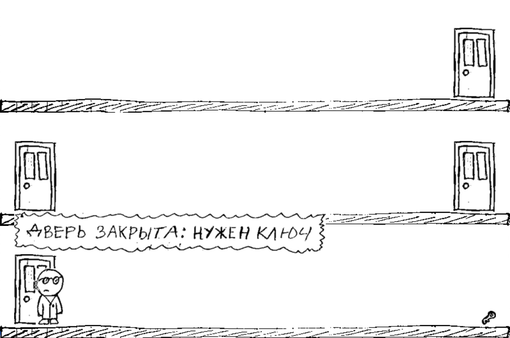

News
Sound support and the search for a new direction
2024-10-11 00:00
Sound support
In September I implemented sound support. However, this was the last work for "Tail and Shadow" project, because the project's story writer - Eugene - left.
The search for a new direction
In September I also noticed the loss of interest in the project by the audience. I linked this to the fact that the project's functional and graphical results did not match that of the audience.. . .
Switching scenes
2024-09-06 00:00
August
In August I implemented scene switching, which allowed me to do the following:
- pressing "Start the game" button in the splash screen takes the player to a level with three floors
- selecting a door takes the player to another floor
- selecting a TV set focuses the player on the TV set with a remote control
- switching TV channels results in different images being shown
Thus, scenes are good both for focusing on items and moving the player around.. . .
Rethinking
2024-08-12 00:00

When July started my initial plan was to make the instrument support Python to JavaScript code translation. However, this did not happen because tasks with higher priority emerged.
Which task is more important than develpment of the instrument? Development of a game, of course! Now, let's go back to the beginning of July 2024…
Gamejam
"Start the game" 3-day gamejam finished in the beginning of July 2024. I participated in the jam to validate the instrument under development and. . .
"Memory" GUI
2024-07-04 00:00
"Memory" GUI
In June I implemented GUI for "Memory" game in Python with the help of Python Arcade.
While searching for the most convenient tool to create resources (assets), I found notebooks lined with graph paper to work the best:

To see the portable code architecture in real life, I participated in the 3-day long gamejam of "Start the game". "Memory" game was used with a customized look to satisfy jam requirements.
Here's how the customized version looks like (Windows64 build):. . .
"Memory" text UI
2024-06-14 00:00
"Memory" text UI
In May I implemented text UI for "Memory" game in Python. And converted it to C++ by the instrument under development.
Game logic cycle implementation lead to the creation of a controller that manages context. Creating the controller in Python was straightforward. C++ version took some time, because the controller needs std::any, which is part of C++17. The instrument under development is limited to C++11 in order to support OpenWrt.
Here's how much code I wrote (in lines):. . .
"Memory" game logic
2024-05-03 00:00
"Memory" game logic
In April I implemented "Memory" game logic in Python as limited language model and successfully converted the code to C++ by the instrument under development.
Limited language model assumes the following architecture of two parts:
- state context
- pure functions without side effects working only with the context
Game logic state context in Python currently looks like this (C++):
```python class memory_Context: def init(self): self.hiddenItems = []. . .
The first example of a portable code
2024-04-11 00:00
Supported platforms
To verify code portability, I selected the following platforms and languages:
- C++: Linux, macOS, OpenWrt, Windows
- JavaScript: Chrome, Firefox, Safari
- Kotlin: Android
- Python: Linux, macOS, Windows
- Swift: iOS, macOS
I created a simple "Hello World" example for each language to understand the basic requirements of each platform.
By the way, OpenWrt turned out the most complex platform to create "Hello World" for, because my TP-Link TL-MR3020 r1 router is considered obsolete since 2018. I had to use the old 17.01.7 firmware, which took about three weeks.. . .
Шина-iOS
2024-03-10 00:00
The first Bus pattern implementation for iOS
I spent January and February making Bus pattern implementation in Swift for iOS. The end result looks nice to me.
I have also done load testing. Turns out, the Bus is 92 times more expensive than a function call. Nonetheless, this doesn't mean the Bus is bad. On the contrary, the numbers highlight the Bus should be used in architectural glue code where it can save up to 30% of code
This example demonstrates several states rendered through a single instance:. . .
Bus-01
2024-01-04 00:00
On the way to portable code
To gain code portability, we have to divide whole code into two parts:
- repeatable: logic
- unique: environment
To simplify portable code construction, we want to be able to place any code - both repeatable and unique - without hierarchy requirements of operating systems. Bus design pattern seems to be the best option. The Bus makes all code chunks equal because they interact through the Bus only.
Bus-01
Currently we have:
. . .
Page 2 of 9